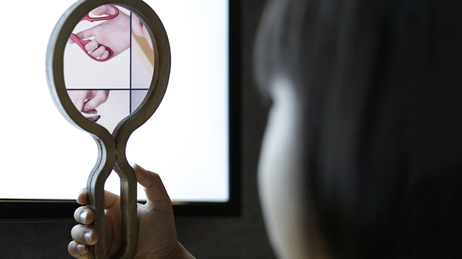

digital

緒方壽人
http://www.ntticc.or.jp/ja/archive/works/oto-megane/-どんな人
ソフトウェア、ハードウェアを問わず、デザイン、エンジニアリング、アート、サイエンスまで幅広く領域横断的な活動を行うデザインエンジニアです。ディレクターとしてTakramに参加し、最近では21_21の「アスリート展」のディレクターなどを務めています。
-解説
白く何も映っていないディスプレイが並んでいて、何かの音をだしています。 虫眼鏡型のレンズを手にとってかざしてみると、画面に音の正体である波形 やその場面の映像を見ることができます。
-好きなところ
この作品にはちゃんとしっかりしたコンセプトがあるのですが、個人的には単純に何も映っていないディスプレイに、レンズをかざすと見えるようになる仕組みの部分にすごく興味を持ちました。簡単に説明すると、ディスプレイの内部には2枚の偏光フィルムが重なっておりそのおかげで映像が映る仕組みになっているそうです。そのため、ディスプレイの2枚の偏光フィルムのうち一枚を剥がすと、映像は映らなくなり、はがした一枚を虫眼鏡に貼り付けることで、レンズ越しに見たときだけ映像が見えるようになります。 他に使用例がないか調べてみたらありました。 ・自分しか見えない液晶ディスプレイの作り方 – 偏光フィルムを使って特殊モニターを簡単に作る https://www.youtube.com/watch?v=zL_HAmWQTgA 上記の作品とは違って虫眼鏡ではなく、メガネにすることで、完全に他人にはみえることのないディスプレイをつくるという動画です。絶対不便だと思います。ただ仕組み的には面白いので、工夫次第で何かの企画に活かせそうな気がしました。